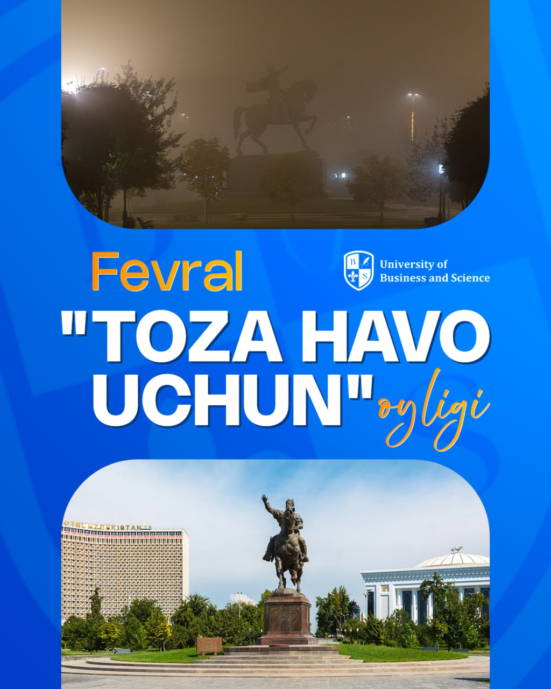
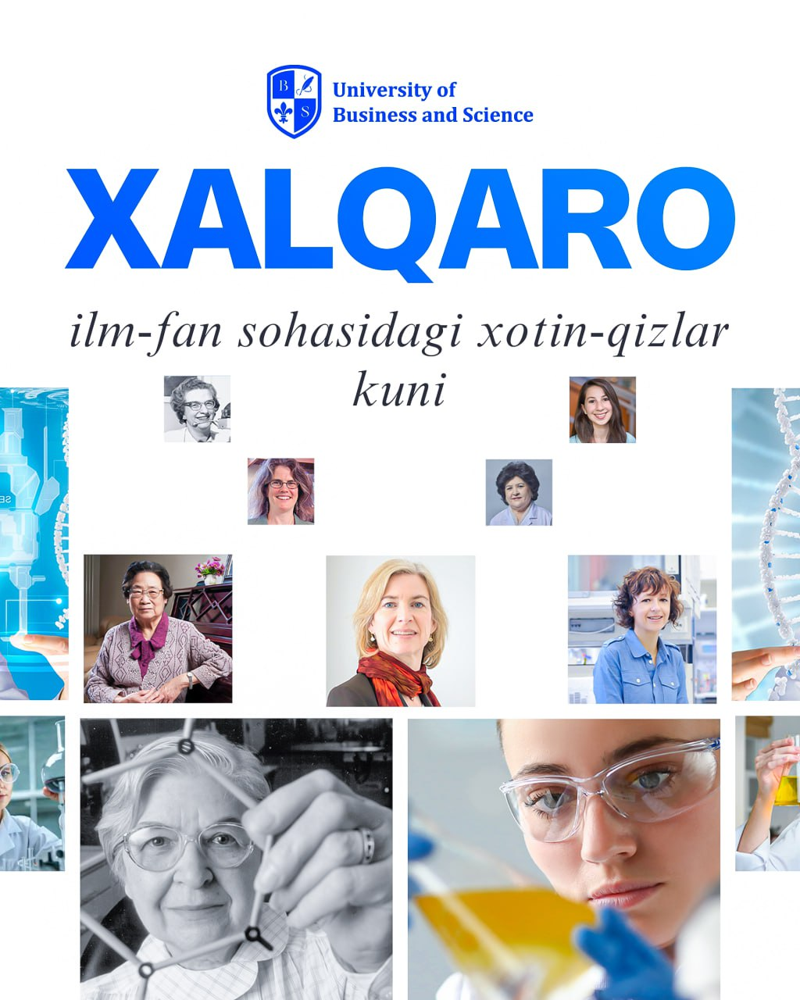

U B S
Univercity of Bussiness and Cines qabulga tayyorgarlik ishlari va eshiklar kuni.

Topza-hudud
Xalqaro saratonga qarshi kurash kuni. Bu kun butun dunyo bo‘ylab saraton kasalligiga qarshi kurashish, xabardorlikni oshirish va oldini olish muhimligini ta’kidlash uchun nishonlanadi.
Univercity of Bussiness and Cines talabalar

4-fevral
Xalqaro saratonga qarshi kurash kuni.
Bu kun butun dunyo bo‘ylab saraton kasalligiga qarshi kurashish, xabardorlikni oshirish va oldini olish muhimligini ta’kidlash uchun nishonlanadi.
4-fevral
Xalqaro saratonga qarshi kurash kuni.
Bu kun butun dunyo bo‘ylab saraton kasalligiga qarshi kurashish, xabardorlikni oshirish va oldini olish muhimligini ta’kidlash uchun nishonlanadi.